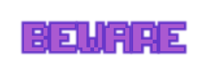
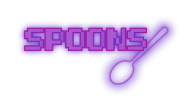

Spoons: A VR Documentary
Spoons was featured at the Framless VR Symposium in 2018
According to the Anxiety and Depression Association of America, Obsessive Compulsive Disorder affects approximately 2.2 million adults in the United States. Spoons' mission is to educate users about the realities of mental illness - how overwhelming and sensory it can be. Through Spoons, users will go through a typical OCD episode: obsessive thoughts, growing panic, compulsions, anxiety, and disappointing relief. Using 360 Virtual Reality and Sound Design, Spoons is a 5-minute, immersive documentary that puts the viewer in the place of someone who suffers from OCD. The project was completed in May 2018 and presented on the HTC Vive, a 360 head-set. Video is best enjoyed in a virtual reality headset.
Documentary?
Spoons, on its face, might not seem like a documentary. It follows a script and actors play the parts. There are no interviews or stats shared with the audience. However, everything the viewers see is true. Virtual reality has changed the way we view and interact with media. Unlike a movie screen, there's no barrier between us and what we're watching. It uses the illusions of place (feeling like you're actually somewhere else when in a virtual world), plausibility (believing that what's happening around you in the virtual world is possible), and embodiment (believing that your avatar's body in the virtual world is actually yours) to transport users. Only the place and plausibility illusions are necessary to create a strong virtual reality experience.
Spoons is experimental. Using the place and plausibility illusions, this project seeks to re-examine how we present truth. Instead of seeing facts about how OCD works or hearing people who have it talk about what they go through, the audience can experience first-hand an approximation of what living with it might be like. In scientific labs through experiments, it has been repeatedly proven that virtual reality can increase empathy and understanding by putting users in the shoes of others with different life experience. Why not use that as a documentary tool to do the same thing? Why not share the feelings that accompany OCD instead of just the facts?
My Role
Spoons was my senior capstone project so I worked in every role. I wrote the script, cast it, filmed in 360, directed, edited, did the sound design, created all promotional materials, planned the premiere, and produced it in its entirety.
Research and Script
The obsessions and compulsions people with OCD experience are varied. There's no "right way" to have it and no set list of symptoms. To make sure my portrayal was accurate and not just a reflection of my own experiences, it was important to talk to other people who live with OCD. Since I was in university and didn't have the reach or resources to contact a wide variety of people, I kept my research local and focused on other students in my school community and in my larger network.
My research started with one-to-one interviews the students located at my university. Interviewees talked at length about their history with OCD, how it affected them growing up (if they had a childhood diagnosis), and what specific obsessions and compulsions they had. While there were multiple cases of overlapping obsessions, nobody had the same obsession-compulsion set. In simpler terms, while two people may have equally strong OCD fears about contracting an illness, one might "satiate" their fears by hand-washing while the other might only feel safe if they knock on wood every time they pass someone with a cold (please note, these are just examples and not true of any person interviewed during this process.) This wasn't particularly surprising as OCD is unique to the individual. The opposite can also be true: two people can have an identical compulsion but a different obsession that's triggering it.
After the interviews, I sent out a survey about how OCD affects their daily lives as students. This survey was sent both to the students at the University of Rochester and in my larger network. It covered daily tasks ranging from brushing their teeth and getting ready for bed to doing their homework. A common theme in the answers was the additional stress they had to deal with. Their OCD could interfere with anything along their normal schedule, making it more of a struggle to do things their peers did with ease. Another issue that appeared in multiple answers was bullying. While the bullying primarily occurred in childhood, it was a common enough experience that it needed to be noted. Students shared stories of being bullied for showing symptoms or for showing symptoms of their symptoms. An example of the latter would be getting made fun of for being routinely late for class, but only being late for class because they were carrying out a compulsion.
Though my sample size was small, the information I gathered covered a wide breadth of experience. When I wrote the script, I picked some of the more common obsessions and compulsions mentioned in the interviews and survey. The narrative follows a student battling with their compulsions while trying to get ready in the morning. The obsessive-compulsive patterns the documentary portrays are: Insomnia, Counting, Checking, Magical Thinking ((believing that two events are connected despite no plausible link between them. An example of this might be thinking that if you don't have coffee with exactly two tablespoons of milk, your best friend will break his leg. There's no logical reason for you to have this thought, but OCD isn't a rational illness and often feeds on anxiety and doubt.)
Filming
I filmed Spoons on the InstaPro 360 - a 360 8K. This camera has six lenses, each filming 60 degrees. Some cameras require filmmakers to manually connect all six shots together, but this one auto-stiches -- all the smaller shots from each lens were automatically combined into one 360 degree shot. This made it easy for me to see exactly how each room scene would look in the final product. It also meant there was no chance of any part of the action being cut off. I cast Shagun, a student on campus with an impressive amount of acting experience, in the role of the student with OCD. The audience follows her from room to room as she gets ready and the auto-stitching of the camera allowed her to move around the space in a way that felt natural to her.
A problem in virtual reality films is, often, the audience feels excluded. They're in the experience, but they're not doing anything and can't interact with the world. To combat this feeling of boredom, I made them a part of the story. It was an early decision to have another actor, Andrew, play the role of the OCD. He would read the lines that Shagun's character would be thinking. This is to give viewers a better and more intense understanding of what it's like to live with OCD and constantly have to deal with intrusive thoughts. When I saw the camera, I made the decision to film from the perspective of the OCD. I set the tripod up so that the camera looked down at her and had her speak directly to the camera. When she looks at the camera in the film and talks to it, users feel like she's looking at and talking to them, further engaging them with the story.
Since the camera was 360, each scene was filmed in one continuous shot.
Editing
All the editing was done in Adobe Premiere Pro CC 2018. This particular platform is designed to accommodate for 360 film, making it the best choice. Additionally, it natively connects to the HTC Vive and allows editing straight from the headset itself. When I wanted to watch my footage in virtual reality to make sure it was effective and looked good, all I had to do was connect the Vive and hit play.
Editing Spoons was unusual because, unlike other documentaries, common techniques like fades were not effective. With only one camera filming in one continuous shot, I couldn't cut away to different angles. To compensate for the visual monotony of the scenes, I used Adobe Illustrator CC 2018 to create words that popped up (see above) to accompany what the OCD was saying. This effect also allowed the user to interact with more of the 360 space by drawing their eyes to different spots in the room and encouraging them to look around. For example, when the OCD said, "Count Again!" the word "Again" would appear in multiple places on the screen and did not go away until the character complied.
To ensure clear sound, I re-recorded all audio parts (both lines and sound effects like doors slamming) with an H2N microphone, muted the original footage, and added the new sound in during post-production.
Reception
Spoons was well received by the University of Rochester community! One user asked, “Is that really what it’s like? That’s so overwhelming!”, which is exactly what I hoped to achieve. Most users commented positively on the clarity of the sound, the visual editing, and the use of all 360 degrees of the space - stating that other virtual reality projects they had seen were lacking these things./p>
In the spring of 2018, my work on Spoons earned me a designation as a Grand Challenge Scholar from the National Academy of Engineering. In the fall of 2018, Spoons was accepted into the Frameless VR Symposium.
The most meaningful feedback I received was from a friend with OCD who told me that, even though she had mostly different compulsions, she related to the main character and felt it was an accurate portrayal.
Technology
I used the InstaPro360 (camera), H2N (microphone), and HTC Vive (virtual reality headset) to create Spoons.
